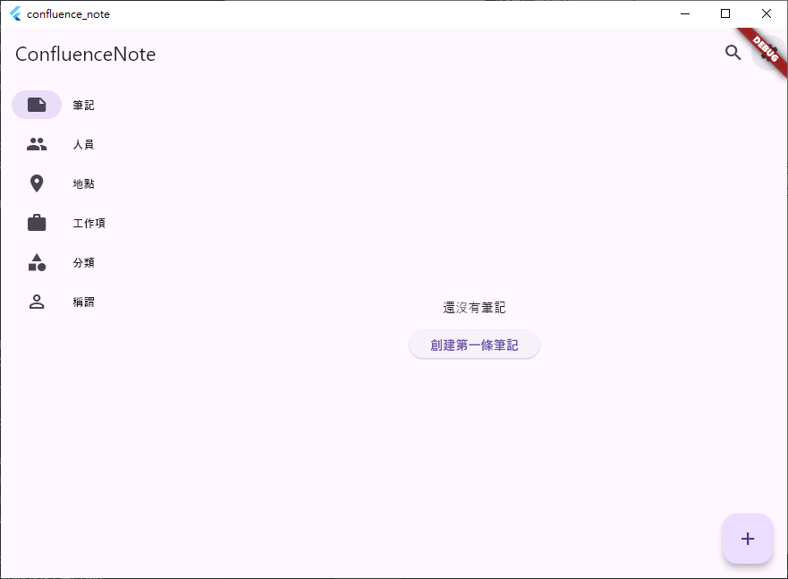
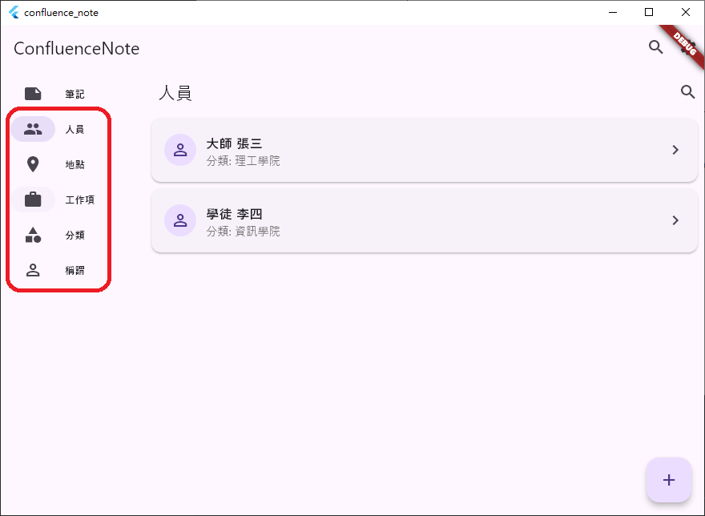
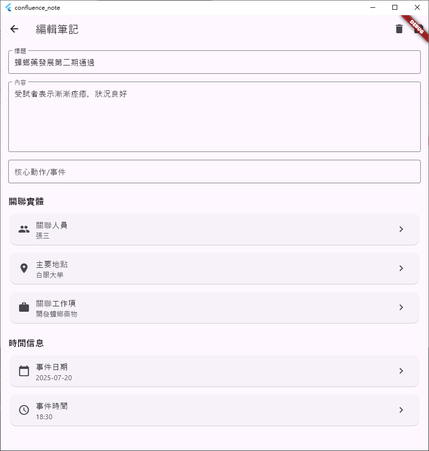
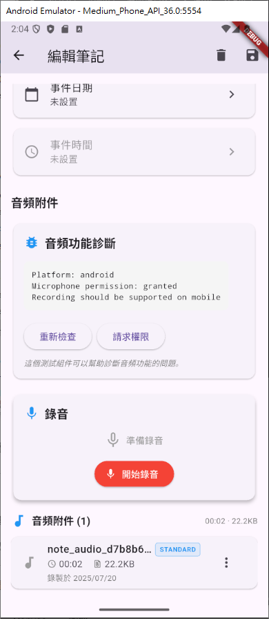

📝 ConfluenceNote - 結構化知識管理系統
一個革命性的筆記管理系統，運用「人事時地物」五維度架構，將抽象工作事務轉化為結構化數據，實現智能化知識組織與高效工作記錄
專案概述
| 項目 | 詳細信息 |
|---|---|
| 路徑 | /Volumes/Code/test-flutter/confluence_note |
| 技術棧 | Flutter, SQLite, Riverpod, Google Sign-In |
| 平台支持 | Windows, Android, iOS, macOS, Linux, Web |
| 狀態 | 🚀 積極開發中，核心架構完成 |
| 複雜度 | 🏆 企業級 - 多層關聯、高度模組化 |
| 領域 | 📱 移動開發 (mobile-development) |
操作介面
Ｗindows
進入介面後，主要以筆記為首 
筆記主要仰賴預設好的基礎資料設置，如下圖匡選的對應5W 
在寫筆記時，就能快速調用 
Android 與 AI
Android 的部分已經成功嘗試擴增錄音功能，並且可轉換為文字

🎯 核心創新概念
五維度架構體系
graph TB subgraph "五維度知識架構" E[事 Event/Action<br/>核心動作動詞] P[人 Person<br/>個體或群體] T[時 Time<br/>時間軸記錄] L[地 Location<br/>物理虛擬空間] O[物 Object<br/>工作項目物件] end subgraph "關聯體系" N[NoteEntry<br/>筆記條目] N -.->|多對多| P N -.->|一對一| L N -.->|多對多| O N -.->|一對一| E N -.->|時間戳| T end style E fill:#ff6b6b style P fill:#4ecdc4 style T fill:#45b7d1 style L fill:#96ceb4 style O fill:#ffeaa7 style N fill:#dda0dd
系統架構概念圖
C4Component title ConfluenceNote 系統架構概覽 Container_Boundary(ui, "用戶界面層") { Component(nav, "左側導航欄", "Flutter Widget", "五維度導航") Component(content, "內容區域", "Flutter Widget", "動態內容展示") Component(forms, "表單組件", "Flutter Widget", "結構化數據輸入") } Container_Boundary(business, "業務邏輯層") { Component(providers, "狀態管理", "Riverpod", "全域狀態管理") Component(features, "功能模塊", "Feature Modules", "按維度組織功能") Component(auth, "認證服務", "Auth Service", "Google登入+本地認證") } Container_Boundary(data, "數據存取層") { Component(repos, "倉儲模式", "Repository Pattern", "數據存取抽象") Component(models, "數據模型", "Dart Models", "五維度實體模型") Component(db, "SQLite", "Local Database", "結構化本地存儲") } Rel(nav, providers, "狀態訂閱") Rel(content, features, "功能調用") Rel(providers, repos, "數據請求") Rel(repos, db, "SQL操作")
📊 數據庫架構設計
實體關係圖 (ERD)
erDiagram User { string id PK string username string email bool isGuest datetime createdAt datetime lastLoginAt } NoteEntry { string id PK string title string content string coreActionVerb datetime createdAt datetime updatedAt datetime eventOccurredAt duration eventDuration string tags string notesForNote string userId FK string primaryPlaceId FK } Person { string id PK string name string extensionNumber string mobileNumber string email string notes string salutationId FK string categoryId FK string userId FK } Place { string id PK string unitName string address string notes string userId FK } WorkObject { string id PK string name int type string description string status string relatedProjectIds string userId FK } Salutation { string id PK string name string userId FK } PersonCategory { string id PK string name string description string userId FK } ActionVerb { string id PK string verb string description string userId FK } AudioAttachment { string id PK string noteEntryId FK string filePath string fileName int fileSize duration recordingDuration datetime createdAt string userId FK } NoteEntry_Person { string noteEntryId PK, FK string personId PK, FK } NoteEntry_WorkObject { string noteEntryId PK, FK string workObjectId PK, FK } Person_Place { string personId PK, FK string placeId PK, FK } %% 關聯關係 User ||--o{ NoteEntry : "擁有" User ||--o{ Person : "管理" User ||--o{ Place : "定義" User ||--o{ WorkObject : "創建" User ||--o{ Salutation : "設定" User ||--o{ PersonCategory : "分類" User ||--o{ ActionVerb : "維護" User ||--o{ AudioAttachment : "記錄" NoteEntry }o--|| Place : "發生地點" NoteEntry ||--o{ AudioAttachment : "音頻附件" NoteEntry }o--|| NoteEntry_Person : "參與者" Person ||--o{ NoteEntry_Person : "參與" NoteEntry }o--|| NoteEntry_WorkObject : "關聯工作項" WorkObject ||--o{ NoteEntry_WorkObject : "被引用" Person }o--|| Salutation : "稱謂" Person }o--|| PersonCategory : "分類" Person ||--o{ Person_Place : "常駐地點" Place ||--o{ Person_Place : "人員"
數據分層架構
| 層級 | 職責 | 技術實現 | 示例 |
|---|---|---|---|
| UI層 | 用戶交互界面 | Flutter Widgets | NotesScreen, PersonForm |
| 狀態管理層 | 業務邏輯與狀態 | Riverpod Providers | noteProvider, authProvider |
| 服務層 | 業務規則處理 | Service Classes | AuthService, AudioService |
| 倉儲層 | 數據存取抽象 | Repository Pattern | NoteRepository, PersonRepository |
| 數據層 | 持久化存儲 | SQLite + Models | DatabaseHelper, 實體模型 |
🏗️ 專案架構詳解
目錄結構圖
confluence_note/
├── 📱 Platform Support
│ ├── android/ # Android 配置
│ ├── ios/ # iOS 配置
│ ├── windows/ # Windows 桌面
│ ├── macos/ # macOS 桌面
│ ├── linux/ # Linux 桌面
│ └── web/ # Web 平台
│
├── 🎯 Core Application
│ └── lib/
│ ├── main.dart # 🚀 應用入口
│ ├── app.dart # 🏠 根組件設置
│ │
│ └── src/
│ ├── 🔧 core/ # 核心基礎設施
│ │ ├── database/
│ │ │ └── database_helper.dart
│ │ ├── auth/
│ │ │ ├── auth_service.dart
│ │ │ └── auth_providers.dart
│ │ └── utils/
│ │ ├── date_utils.dart
│ │ └── id_generator.dart
│ │
│ ├── 📊 models/ # 數據實體模型
│ │ ├── note_entry.dart
│ │ ├── person.dart
│ │ ├── place.dart
│ │ ├── work_object.dart
│ │ ├── action_verb.dart
│ │ └── user.dart
│ │
│ ├── 🗄️ repositories/ # 數據存取層
│ │ ├── base_repository.dart
│ │ ├── note_repository.dart
│ │ ├── person_repository.dart
│ │ ├── place_repository.dart
│ │ └── work_object_repository.dart
│ │
│ ├── 🎭 features/ # 功能模塊 (Feature-First)
│ │ ├── auth/ # 👤 認證功能
│ │ │ └── screens/
│ │ ├── notes/ # 📝 筆記核心
│ │ │ ├── screens/
│ │ │ └── widgets/
│ │ ├── people/ # 👥 人員管理
│ │ │ ├── screens/
│ │ │ └── widgets/
│ │ ├── places/ # 📍 地點管理
│ │ │ ├── screens/
│ │ │ └── widgets/
│ │ ├── work_objects/ # 📋 工作項管理
│ │ │ ├── screens/
│ │ │ └── widgets/
│ │ ├── audio/ # 🎙️ 音頻功能
│ │ │ ├── models/
│ │ │ ├── services/
│ │ │ ├── widgets/
│ │ │ └── screens/
│ │ ├── layout/ # 🖼️ 主佈局
│ │ │ ├── main_layout.dart
│ │ │ ├── side_navigation.dart
│ │ │ └── content_area.dart
│ │ └── search/ # 🔍 搜索功能
│ │ └── screens/
│ │
│ └── 🧩 widgets/ # 共享組件
│ └── pickers/
│ └── entity_picker.dart
│
├── 📚 Documentation
│ ├── README.md # 主要說明文件
│ ├── README-project-1.md # 概念設計
│ ├── README-project-2.md # 架構設計
│ ├── README-project-3.md # 實現指南
│ ├── README-project-4.md # 開發指導
│ ├── AUDIO_FEATURE_PLAN.md # 音頻功能規劃
│ ├── AUDIO_TESTING_GUIDE.md # 音頻測試指南
│ ├── PHASE2_TESTING_GUIDE.md # 第二階段測試
│ ├── CHANGELOG.md # 版本變更記錄
│ └── CODE_OF_CONDUCT.md # 行為準則
│
└── 🖼️ Assets
└── image/README/ # 說明文件截圖
導航架構設計
graph LR subgraph "左側導航架構" A[總覽儀表板] subgraph "按事分類" B1[討論相關] B2[設計工作] B3[開發日誌] B4[會議記錄] end subgraph "按物分類" C1[開發任務] C2[文檔工作] C3[Bug修復] C4[研究項目] end subgraph "按人分類" D1[同事] D2[客戶] D3[合作夥伴] D4[外部聯絡人] end subgraph "按地分類" E1[會議室] E2[辦公室] E3[遠程會議] E4[外部地點] end subgraph "按時分類" F1[今天] F2[本週] F3[本月] F4[日曆視圖] end subgraph "系統管理" G1[人員管理] G2[地點管理] G3[工作項管理] G4[動作庫管理] G5[系統設定] end end A --> B1 style A fill:#e1f5fe style B1 fill:#fff3e0 style C1 fill:#f3e5f5 style D1 fill:#e8f5e8 style E1 fill:#fff8e1 style F1 fill:#fce4ec style G1 fill:#f1f8e9
💡 核心技術實現
狀態管理架構
graph TB subgraph "Riverpod 狀態管理層次" UI[UI Components] subgraph "Provider Layer" UP[UI Providers<br/>按鈕狀態、表單驗證] BP[Business Providers<br/>功能邏輯、數據處理] DP[Data Providers<br/>倉儲調用、快取管理] end subgraph "Service Layer" AS[Auth Service] AUS[Audio Service] NS[Notification Service] end subgraph "Repository Layer" NR[Note Repository] PR[Person Repository] PLR[Place Repository] WR[WorkObject Repository] end subgraph "Data Layer" DB[(SQLite Database)] PREF[Shared Preferences] FILES[Local Files] end end UI --> UP UI --> BP UP --> BP BP --> DP DP --> AS DP --> AUS DP --> NS AS --> NR AUS --> PLR NR --> DB PR --> DB PLR --> DB WR --> DB AS --> PREF AUS --> FILES style UI fill:#e3f2fd style UP fill:#fff3e0 style BP fill:#f3e5f5 style DP fill:#e8f5e8 style DB fill:#ffebee
音頻功能架構
| 功能模塊 | Android實現 | 核心技術 | 特色功能 |
|---|---|---|---|
| 錄音服務 | AudioRecordingService | Flutter Sound | 實時錄音、暫停/恢復 |
| 播放服務 | AudioPlaybackService | AudioPlayers | 播放控制、進度條 |
| 存儲管理 | AudioStorageService | Path Provider | 本地文件管理 |
| UI組件 | AudioRecordingWidget | Custom Widgets | 錄音按鈕、波形顯示 |
平台特性支持
graph LR subgraph "平台功能矩陣" W[Windows] A[Android] I[iOS] M[macOS] L[Linux] WEB[Web] end subgraph "核心功能" F1[筆記管理 ✓] F2[數據同步 ✓] F3[用戶認證 ✓] F4[SQLite存儲 ✓] end subgraph "平台特殊功能" AF1[音頻錄製] AF2[文件系統存取] AF3[原生整合] end W --> F1 A --> F1 I --> F1 M --> F1 L --> F1 WEB --> F1 A --> AF1 I --> AF1 W --> AF2 M --> AF2 style A fill:#a5d6a7 style I fill:#81c784 style W fill:#64b5f6 style M fill:#4fc3f7 style L fill:#aed581 style WEB fill:#ffb74d
🎨 用戶體驗設計
界面佈局設計
graph TB subgraph "主界面佈局" subgraph "Header" H1[應用標題] H2[用戶資訊] H3[全域搜索] end subgraph "Main Content" subgraph "Left Sidebar" L1[五維度導航] L2[快速篩選] L3[最近使用] L4[設定選項] end subgraph "Content Area" C1[動態內容區] C2[詳細視圖] C3[編輯表單] end subgraph "Right Panel" R1[關聯信息] R2[快速操作] R3[預覽面板] end end subgraph "Footer" F1[狀態欄] F2[音頻控制] F3[同步狀態] end end style L1 fill:#e1f5fe style C1 fill:#fff3e0 style R1 fill:#f3e5f5
數據流向設計
sequenceDiagram participant U as User participant UI as UI Layer participant P as Provider participant R as Repository participant DB as Database Note over U,DB: 創建新筆記流程 U->>UI: 點擊"新增筆記" UI->>P: noteProvider.createNote() P->>P: 驗證輸入數據 P->>R: noteRepository.insert() R->>DB: SQL INSERT DB-->>R: 返回ID R-->>P: 成功回應 P-->>UI: 更新狀態 UI-->>U: 顯示新筆記 Note over U,DB: 關聯查詢流程 U->>UI: 選擇關聯人員 UI->>P: personProvider.getRelated() P->>R: personRepository.findByNote() R->>DB: JOIN查詢 DB-->>R: 關聯數據 R-->>P: 人員列表 P-->>UI: 更新UI UI-->>U: 顯示關聯
🔍 核心業務流程
筆記創建工作流
| 步驟 | 操作 | 輸入 | 輸出 | 驗證規則 |
|---|---|---|---|---|
| 1 | 選擇核心動作 | ActionVerb | 動作ID | 必選，來自預定義清單 |
| 2 | 設定時間 | DateTime | 事件時間戳 | 預設當前時間，可調整 |
| 3 | 關聯人員 | Person List | 人員ID陣列 | 可選，支援多選 |
| 4 | 指定地點 | Place | 地點ID | 可選，單選 |
| 5 | 關聯工作項 | WorkObject List | 工作項ID陣列 | 可選，支援多選 |
| 6 | 填寫內容 | Text Content | 筆記內容 | 必填，最少10字 |
| 7 | 添加音頻 | Audio File | 音頻附件 | 可選，僅移動端 |
| 8 | 保存筆記 | Complete Data | 筆記ID | 自動生成UUID |
搜索查詢矩陣
graph LR subgraph "搜索維度" S1[全文搜索] S2[按人搜索] S3[按地搜索] S4[按物搜索] S5[按事搜索] S6[按時間搜索] end subgraph "查詢條件" Q1[關鍵字匹配] Q2[標籤篩選] Q3[日期範圍] Q4[關聯查詢] Q5[模糊搜索] end subgraph "結果展示" R1[列表視圖] R2[卡片視圖] R3[時間軸視圖] R4[關聯圖視圖] end S1 --> Q1 S2 --> Q4 S3 --> Q4 S4 --> Q4 S5 --> Q2 S6 --> Q3 Q1 --> R1 Q4 --> R4 Q3 --> R3 style S1 fill:#e3f2fd style Q1 fill:#fff3e0 style R1 fill:#f3e5f5
📈 技術債務與優化
性能優化策略
| 優化層面 | 當前實現 | 優化方向 | 預期提升 |
|---|---|---|---|
| 數據庫查詢 | 基礎SQL查詢 | 索引優化、查詢緩存 | 50% 查詢速度提升 |
| UI渲染 | 基礎Widget | LazyLoading、虛擬滾動 | 記憶體使用減少30% |
| 狀態管理 | Provider基礎 | 細粒度Provider分割 | 重建次數減少40% |
| 文件存儲 | 同步IO操作 | 異步操作、批次處理 | IO效能提升60% |
擴展性設計
graph TB subgraph "未來擴展規劃" subgraph "雲端整合" C1[Firebase同步] C2[多設備協作] C3[團隊共享] end subgraph "AI功能" A1[智能分類] A2[內容建議] A3[關聯推薦] A4[語音轉文字] end subgraph "企業功能" E1[權限管理] E2[審計日誌] E3[數據分析] E4[報表生成] end subgraph "平台擴展" P1[桌面原生應用] P2[瀏覽器擴展] P3[API服務] P4[第三方整合] end end style C1 fill:#e3f2fd style A1 fill:#fff3e0 style E1 fill:#f3e5f5 style P1 fill:#e8f5e8
🎯 專案價值與影響
創新技術貢獻
| 創新領域 | 技術亮點 | 行業影響 |
|---|---|---|
| 知識管理 | 五維度結構化組織 | 重新定義個人知識管理方式 |
| Flutter架構 | 企業級模組化設計 | 為複雜應用提供架構範本 |
| 數據關聯 | 多維度關聯查詢 | 提升結構化數據檢索效率 |
| 跨平台一致性 | 統一業務邏輯實現 | 降低多平台開發成本 |
商業化潛力分析
pie title 市場細分與機會 "個人用戶" : 30 "小型團隊" : 25 "企業客戶" : 35 "教育機構" : 10
技術成熟度評估
| 技術模塊 | 完成度 | 穩定性 | 擴展性 | 維護性 |
|---|---|---|---|---|
| 核心架構 | 95% | ⭐⭐⭐⭐⭐ | ⭐⭐⭐⭐⭐ | ⭐⭐⭐⭐⭐ |
| 數據模型 | 90% | ⭐⭐⭐⭐⭐ | ⭐⭐⭐⭐ | ⭐⭐⭐⭐ |
| UI組件 | 85% | ⭐⭐⭐⭐ | ⭐⭐⭐⭐ | ⭐⭐⭐⭐ |
| 音頻功能 | 80% | ⭐⭐⭐ | ⭐⭐⭐ | ⭐⭐⭐ |
| 雲端同步 | 20% | ⭐⭐ | ⭐⭐⭐⭐⭐ | ⭐⭐⭐ |
🔄 開發時間軸
歷史發展階段
gantt title ConfluenceNote 開發時間軸 dateFormat YYYY-MM-DD section 概念設計 五維度架構設計 :milestone, concept, 2024-12-01, 0d 需求分析與建模 :design1, 2024-12-01, 7d section 技術架構 Flutter架構設計 :arch1, after design1, 10d 數據庫設計 :arch2, after design1, 8d UI/UX設計 :arch3, after arch1, 12d section 核心開發 基礎架構實現 :dev1, after arch2, 15d 筆記功能開發 :dev2, after dev1, 12d 人員管理功能 :dev3, after dev1, 10d 地點管理功能 :dev4, after dev3, 8d section 高級功能 音頻功能開發 :audio, after dev2, 14d 搜索功能實現 :search, after dev4, 10d 認證系統整合 :auth, after dev1, 8d section 測試與部署 單元測試編寫 :test1, after audio, 7d 整合測試 :test2, after search, 5d 性能優化 :opt, after test1, 10d 文檔完善 :doc, after test2, 5d section 未來規劃 AI功能研發 :future1, 2025-02-01, 20d 雲端同步開發 :future2, 2025-03-01, 25d 企業版功能 :future3, 2025-04-01, 30d
當前狀態更新
| 模塊 | 最新進展 | 完成日期 | 備註 |
|---|---|---|---|
| 基礎架構 | ✅ 完成 | 2025-01-15 | 包含所有核心模塊 |
| 數據模型 | ✅ 完成 | 2025-01-12 | ERD設計已實現 |
| 筆記功能 | 🔄 開發中 | 2025-01-25 | 核心功能80%完成 |
| 音頻系統 | 🔄 測試中 | 2025-01-30 | Android平台優先 |
| UI組件 | 🔄 迭代中 | 2025-02-05 | 響應式設計優化 |
🏆 學習成果與技術洞察
核心技術掌握
radar title 技術能力雷達圖 config { width: 600 height: 400 } layout { Flutter開發 : 90 狀態管理 : 85 數據庫設計 : 95 架構設計 : 88 企業級開發 : 80 用戶體驗 : 75 性能優化 : 70 跨平台開發 : 92 }
關鍵學習收穫
| 技術領域 | 深度學習點 | 實際應用 | 未來發展 |
|---|---|---|---|
| Flutter企業級開發 | Feature-First架構、Riverpod狀態管理 | 複雜應用架構設計 | 大型團隊協作開發 |
| 數據庫設計 | ERD建模、多表關聯設計 | 結構化數據存儲 | NoSQL混合架構 |
| 軟體架構 | Clean Architecture、Repository Pattern | 可維護代碼架構 | 微服務架構設計 |
| 產品設計 | 領域驅動設計、用戶體驗設計 | 商業需求轉化 | 產品戰略規劃 |
創新突破點
- 🎯 概念創新：將抽象工作概念轉化為結構化數據模型
- 🏗️ 架構創新：Five-Dimensional關聯式知識管理架構
- 💡 技術創新：Flutter企業級應用最佳實踐範本
- 🎨 體驗創新：維度化導航與智能關聯查詢體驗
踩坑經驗
目前我們發現到 flutter 在使用上，更接近弱化擴張能力的前端開發，很多工作盡可能仰賴後端， 另外在開發中發現到，雖然 flutter 是個跨平台的基礎，但實際上他硬體支援其實並不好， 舉個例子，我們加入錄音後，發現windows很難支援，僅有android可以穩定運作。
⏰ 總投入時間：150+ 小時設計與開發 | 🎯 成果：企業級知識管理系統 | 📚 學習：領域驅動設計、Flutter企業級開發、複雜數據關聯設計
🔗 專案映射
- 開發資料夾：
/Volumes/Code/test-flutter/confluence_note - GitHub倉庫：pekora-tech/test-flutter
- 相關專案：知識管理系統、企業工作流程管理、結構化筆記工具、Flutter企業應用範本
- 技術標籤：
#Flutter#企業級開發#知識管理#結構化數據#跨平台應用
📋 未來發展路線圖
短期目標 (3個月)
- 完成核心筆記功能開發
- 實現完整的音頻錄製與播放
- 優化用戶界面與交互體驗
- 完成跨平台測試與調優
中期目標 (6個月)
- 整合AI智能推薦功能
- 實現雲端同步與多設備協作
- 開發高級搜索與數據分析
- 建立插件化擴展系統
長期願景 (1年)
- 企業級權限管理與安全機制
- 開放API與第三方整合平台
- 國際化與多語言支持
- 商業化產品化推廣
💡 項目哲學：「將知識工作的複雜性轉化為結構化的簡潔性，用軟體工程思維重新定義個人知識管理。」